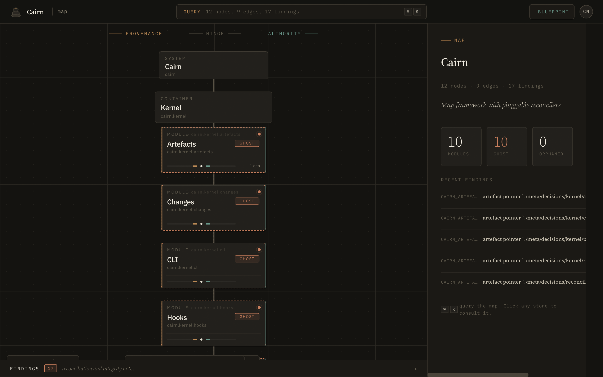

You wrote the ADR. Nobody reads it. Six months later you're the only one who remembers why auth.tokens can't call the cache directly, and your AI agent keeps confidently proposing that it should. Cairn turns an afternoon's worth of blueprint into a living map: reconciled against the code you actually shipped, queryable by every agent you hand the repo to.
Claude Code. Cursor. Copilot. They all work best when the structure is explicit, not inferred from file names at 2am. You declare the shape of your system once. Cairn reconciles it against reality, blocks the merge when the two disagree, and hands your agents a graph they can actually use.
Provenance is why you decided. Authority is what must stay true. They meet at a decision, and the decision is the moment your system tells the truth about itself. Cairn keeps both chains visible long after the Slack thread is gone.

You already know the shape of your system. It lives in your head, in a half-updated ADR folder, in the Slack thread from March. You write a blueprint instead: a short declarative file that names your systems, containers, modules, the contracts between them, and the decisions that shaped them. Not prose that rots. A file your toolchain reads.
Cairn reconciles that blueprint against reality. The code on disk today. The contracts in contracts/. The decision records someone actually wrote. What comes back is a map: a graph of what exists, what's declared, what's drifted, and exactly where the two stopped agreeing.
When your agent needs to change auth.session, it stops re-reading src/auth from scratch. It asks the map: what's this module's contract, which decisions constrain it, what's its neighbourhood. It gets a typed answer and ships code that fits.
This is the spine. The provenance chain runs upward from sources and research: the evidence that earned your decision the right to exist. The authority chain runs downward through blueprint, contract, and code: the rules that nobody gets to break silently. They meet at the moment you commit. That moment is a decision, and it is the one place your system gets to be honest about itself.
Sources are the raw evidence. Research is how you made sense of them. Neither gets to decide anything on its own. They accumulate until a decision reads them and says this is what we're going with. When future-you asks why is it this way, the provenance chain is the answer that survives.
A decision reads provenance and writes authority. It is the one place in the whole system where deliberation becomes obligation. Every authoritative statement in Cairn, every contract, every blueprint node, traces back to a decision. Every decision traces back to the evidence that earned it. Nothing in your architecture is allowed to just appear.
The blueprint declares how the system is shaped. Contracts formalise the interfaces between modules. Code has to realise them. Cairn reconciles the three and tells you precisely where they disagree: as a structural error, an interface contradiction, or a rationale tension. The fence around the authority chain is the part that watches your back.
The cairn.blueprint file is declarative and human-readable. You can draft the first pass over one afternoon and a second coffee. What Cairn gives back is map.md: every node labelled synced, ghost, or orphaned, plus a ranked list of findings sitting right where agents and teammates can find them.
# auth platform. declared structure. system auth "Authentication & session" { owner platform-team container api "Edge gateway" { module session { path src/session/ contract contracts/session.md @decides dec.session-lifecycle } module tokens { path src/tokens/ contract contracts/tokens.md @depends session } } }
Three kinds of wrong, kept distinct on purpose. Cairn is not a linter that nags. It is the thing that tells you when the code and the declaration have started lying to each other, and which of the two classes of lie it is. Flattening both to "warnings" is how architectural intent quietly rots.
A node in the blueprint has no counterpart on disk. A contract points at a module ID that doesn't exist. The graph is malformed, and nothing downstream is trustworthy until it is fixed. The scan refuses to continue.
halts the scanThe contract says one signature. The code ships another. The interface hash moved and nobody told the contract. This is drift caught in the act, and it is the merge-blocker you want firing before your agent confidently ships the version that breaks everything upstream.
Two decisions are arguing with each other. Or a decision's provenance no longer holds up. The code still compiles, but the story has drifted. Cairn flags it for review instead of blocking, so you can resolve it the next time you're already thinking about that module.
flags for reviewA reconciler is a plugin interface. It answers one question: given a node in the blueprint, what's actually there? Code is the reconciler that ships today. The kernel doesn't care. Anywhere "what we said" has to stay honest with "what is," the same machinery applies.
Module paths, interface hashes, contract markdown. Reconcile the repo against what the blueprint said it would be, before your agent ships something it shouldn't.
Experiments, hypotheses, protocols as typed artefacts. Reconcile the claims in the paper draft against the evidence chain that is supposed to justify them.
Teams, charters, ownership. Reconcile the org chart you drew against who is actually responsible for what this quarter.
Parts, suppliers, regulatory certifications. Reconcile the bill of materials against the physical audit, and catch the divergence before the regulator does.
One CLI. One file to author. One command to scan. Your first map.md lands on disk the first time you run it, and your agents can query it the next prompt.
$ cargo install --git https://github.com/George-RD/cairn --branch dev $ cairn init # scaffolds cairn.blueprint $ cairn scan # reconcile, emit map.md
$ cairn get auth.api.session --json $ cairn neighbourhood auth.api.session $ cairn contract auth.api.tokens $ cairn depends auth.api.tokens --transitive $ cairn lint --json # all findings $ cairn hooks install # pre-commit, pre-merge